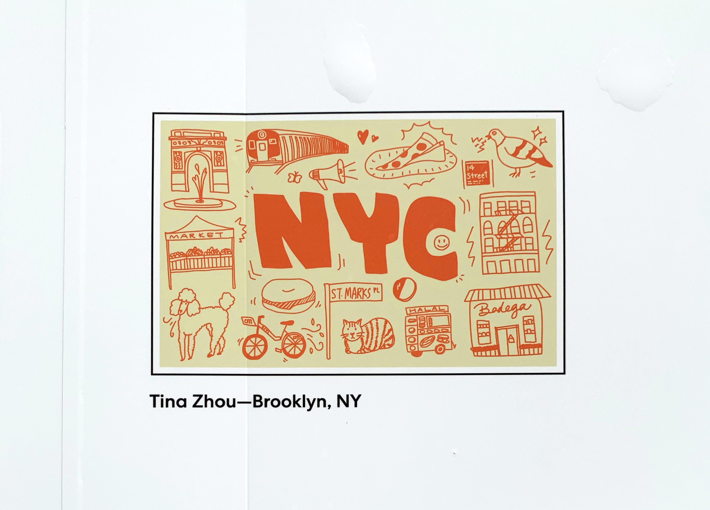

Now, I wish I could have a glorious, majestic picture of my lil flag wavering in the wind...but let's just say Rockefeller Plaza is less windy than one would imagine.
While I was trying to take a picture of the flag, someone thought I was about to vandalize it and called the cops—next thing I knew three scary-looking cops came up to interrogate me. At least it makes for a good story.